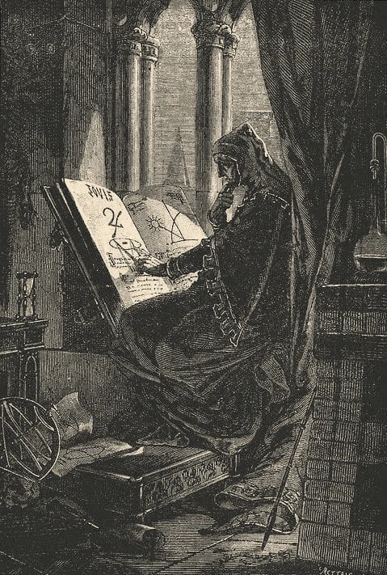

Artigo · 12 min
O Caibalion
Os sete princípios, em linguagem simples
Mentalismo, correspondência, vibração, polaridade, ritmo, causa e efeito e gênero, como o livro de 1908 os apresenta.
Editorial curado
Fonte primária
Corpus Hermeticum
Poimandres: a Mente que fala a Hermes
Fonte primáriaArtigo
Biblioteca de Nag Hammadi
O Evangelho de Tomé e os 114 ditos
Editorial curado
Fonte primária
O Caibalion
Capítulo II: o princípio do mentalismo
Fonte primáriaArtigos em destaque
Escolhidos pela curadoria.
Artigo · 9 min
O Caibalion
Quem foram os Três Iniciados? O debate sobre a autoria
Editorial curadoArtigo · 11 min
Corpus Hermeticum
Tratado XIII: renascimento e silêncio
Editorial curado
Artigo · 8 min
Apócrifos do Cristianismo Primitivo
O que é um apócrifo? Um termo com história
De "escondido" a "não canônico": como a palavra mudou de sentido entre os padres da Igreja, Jerônimo e a crítica moderna.
Editorial curadoArtigo · 10 min
O Livro de Urântia
Documento 47: os sete mundos das mansões
Editorial curadoArtigo · 13 min
Apócrifos do Cristianismo Primitivo